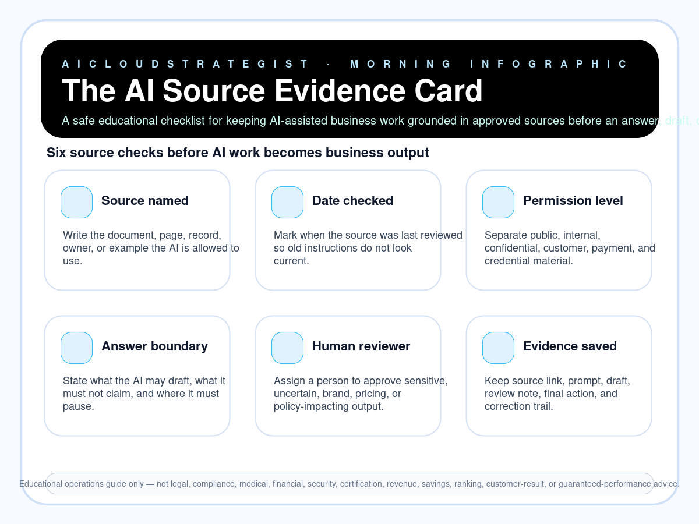

Morning publication · AI source evidence
The AI Source Evidence Card
A safe educational checklist for keeping AI-assisted business work grounded in approved sources before an answer, draft, or decision moves forward.

Six source evidence checks
- Source named: Write the document, page, record, owner, or example the AI is allowed to use.
- Date checked: Mark when the source was last reviewed so old instructions do not look current.
- Permission level: Separate public, internal, confidential, customer, payment, and credential material.
- Answer boundary: State what the AI may draft, what it must not claim, and where it must pause.
- Human reviewer: Assign a person to approve sensitive, uncertain, brand, pricing, or policy-impacting output.
- Evidence saved: Keep source link, prompt, draft, review note, final action, and correction trail.
Truth boundary
Educational operations guide only — not legal, compliance, medical, financial, security, certification, revenue, savings, ranking, customer-result, or guaranteed-performance advice.
Need this converted into a practical operating check?
AICloudStrategist can review your website, lead follow-up, AI workflow, cloud cost, or trust readiness and show the safest next fixes in plain business language.
Contact contact@aicloudstrategist.com or WhatsApp AICloudStrategist for a practical review.